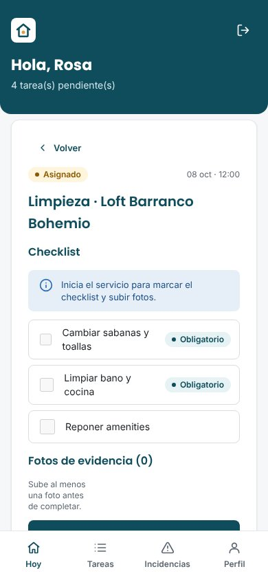
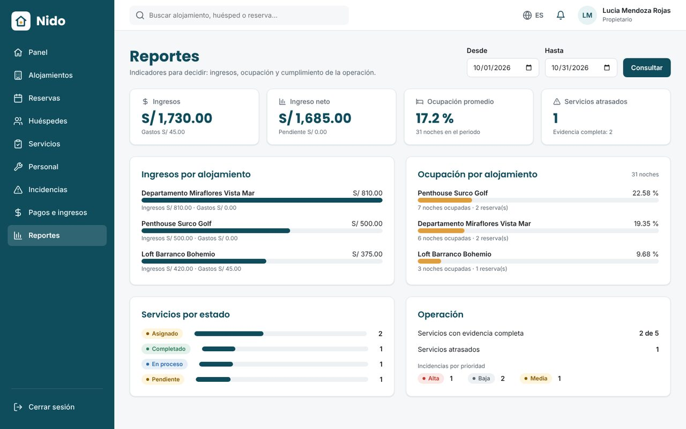
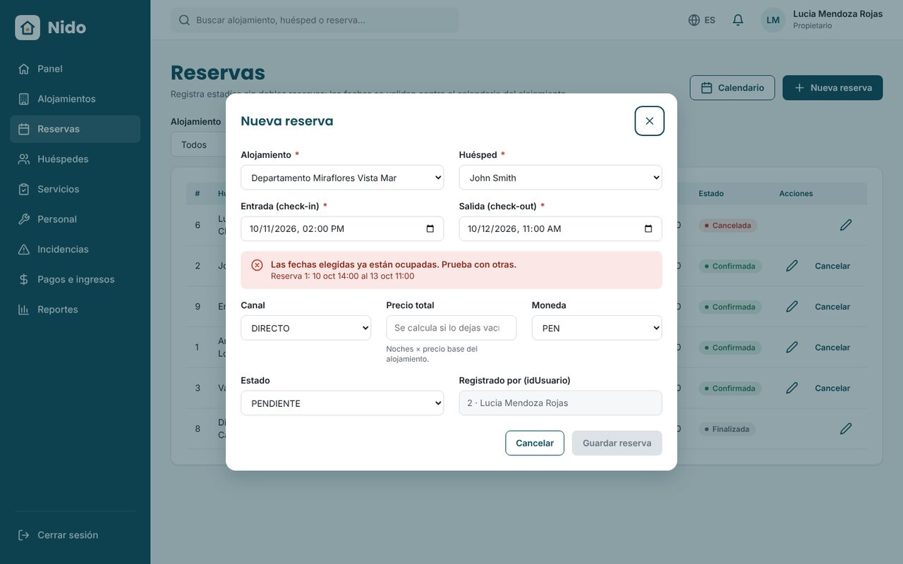

Reservas sin cruces
Calendario por alojamiento y validación automática de fechas antes de confirmar.
Nido conecta reservas, limpieza, mantenimiento, fotos de evidencia, incidencias e ingresos en un solo lugar. Sabes qué hay que hacer, quién lo hizo y cómo quedó.

Una reserva genera el servicio de limpieza; el servicio exige checklist y fotos; cualquier problema queda como incidencia; y todo suma a tus reportes.
Calendario por alojamiento y validación automática de fechas antes de confirmar.
Asigna limpieza o mantenimiento; se cierran solo con el checklist completo y fotos.
Prioridad, estado y responsable para que ningún problema quede olvidado.
Reportes por periodo y alojamiento para decidir precios y mejorar la operación.
Dirección confirmada en el mapa, capacidad y precio por noche.
Nido bloquea las fechas ocupadas y calcula el precio por noches.
Tu personal lo acepta, sigue el checklist y sube las fotos.
Ingresos, ocupación y cumplimiento de cada alojamiento.
Controla tu portafolio desde cualquier lugar.

Instrucciones claras, sin mensajes repetidos.
Mientras eliges las fechas, Nido revisa el calendario del alojamiento y te avisa si ya están ocupadas.
Quiero probarlo
Déjanos tus datos y te damos acceso a la versión de prueba de Nido. Sin tarjeta de crédito.